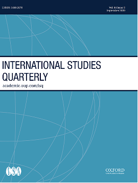

收录于合集 #新刊速递 123个

期刊简介

《国际研究季刊》（International Studies Quarterly）是国际研究协会的旗舰期刊，由牛津大学出版社每年发行四期，旨在发表与国际研究中重要理论性、实证性、规范性主题相关的领先学术成果。根据Journal Citation Reports的数据，2019年该期刊的影响因子为2.146。
本期目录
1. 挑衅、公众舆论与国际争端：来自中国的证据
Provocation, Public Opinion, and International Disputes: Evidence from China
2. 保卫社会、建设国家：作为竞争性生物政治的反叛治理
Defending Society, Building the Nation: Rebel Governance as Competing Biopolitics
3. 利益、制度和环境：对渔业补贴的考察
Interests, Institutions, and the Environment: An Examination of Fisheries Subsidies
4. 由愤世嫉俗形成的团结？俄罗斯阴谋论叙事在海外的影响
Solidarity through Cynicism? The Influence of Russian Conspiracy Narratives Abroad
5. 国际官僚与国际组织业绩：世界银行项目中针对特定国家和行业领域的知识
International Bureaucrats and Organizational Performance. Country-Specific Knowledge and Sectoral Knowledge in World Bank Projects
6. 军队对使用武力的态度的特点和起源
The Character and Origins of Military Attitudes on the Use of Force
7. 超越点名投票：联合国大会中的赞助动态
Beyond Roll-Call Voting: Sponsorship Dynamics at the UN General Assembly
8. 参与人道主义行动的组织：引入一个新的数据集
Organizations Involved in Humanitarian Action: Introducing a New Dataset
9. 对“火星计划”和“分裂的军队”的评价
An Appraisal of Project Mars and the Divided Armies Argument
01
挑衅、公众舆论与国际争端：来自中国的证据
题目： Provocation, Public Opinion, and International Disputes: Evidence from China
作者： Allan Dafoe, 乌普萨拉大学客座研究员；Samuel Liu, 康奈尔大学博士生；Brian O’Keefe, 康奈尔大学博士生；Jessica Chen Weiss，康奈尔大学教授。
摘要： 领导人在国际争端中面临哪些公众压力？领导人经常会谴责外国行为具有挑衅性，激发公众愤怒并要求做出赔偿。本文认为，那些援引外国挑衅的领导人——无论其是假设的、记忆中的、夸大的还是真实的——如果未能在当下采取强硬措施，就会面临公众的高度反对，而不会产生聚旗效应。在两项调查实验和一项涉及美国海军在南海巡逻的准实验中，本文发现，被认为是挑衅性的事件增加了公众对中国政府的压力，要求其做出回应或会招致公众的反对。本文讨论了对此可能的解释，即政府精英如何寻求减轻公众的不满，以及此类事件如何改变胁迫和威慑的逻辑。
What public pressures do leaders face in international disputes? Leaders often denounce foreign actions as provocations, triggering public anger and demands for restitution. Rather than generating a reflexive rally around the flag, we argue that leaders who invoke foreign provocations—whether hypothetical, remembered, exaggerated, or real—face heightened public disapproval if they fail to take tough action in the present. Across two survey experiments and a quasi-experiment involving US naval patrols in the South China Sea, we find that incidents construed as provocative increase public pressure on the Chinese government to respond or incur public disapproval. We discuss possible explanations, how government elites seek to mitigate public disapproval, and how such events can change the logic of coercion and deterrence.
02
保卫社会、建设国家：作为竞争性生物政治的反叛治理
题目： Defending Society, Building the Nation: Rebel Governance as Competing Biopolitics
作者： David Brenner，英国苏塞克斯大学全球事务讲师；Martina Tazzioli，伦敦大学金史密斯学院讲师。
摘要： 叛乱团体在全世界范围内统治着大量的领土。他们经常向其控制下的民众提供重要的公共产品和服务。关于叛军治理的学术研究通常以武装团体需要产生地方和国际合法性来解释这一点。本文作者认为，这种将叛军治理理解为权力的工具性手段是不够的。相反，本文作者提出了一个新的概念，即叛军治理是竞争性的生物政治。对于叛乱统治的生物政治技术的追踪揭示了战时社会秩序的生产性功能，将民众塑造成想象中的社区，直接反对现有的民族国家。本文运用福柯的著作，结合查特吉对后殖民国家和民族形成背景下的政府性的理解，以及对缅甸北部Pat Jasan地区的实证研究来发展这一视角。这个运动与克钦叛乱有关，通过生物政治干预来对抗毁灭性的毒品危机，在长期的民族冲突中形成克钦民族的身体。除了揭示世界上持续时间最长但研究最少的内战之一，本文还为国际研究提供了三个独特的贡献：探索作为公共卫生行为者的非国家武装团体，将叛乱治理的社会学基础理论化，以及发展超越民族国家的生物政治学概念。
Rebel groups govern significant parts of territory worldwide. They often deliver crucial public goods and services to populations under their control. Scholarship on rebel governance commonly explains this with the need for armed groups to generate local and international legitimacy. We argue that this understanding of rebel governance as an instrumental means to power is insufficient. Instead, we propose a novel conceptualization of rebel governance as competing biopolitics. Tracing biopolitical technologies of rebel rule reveals the productive functions of war-time social orders for molding populations into imagined communities in direct opposition to the existing nation state. We develop this perspective by mobilizing Foucault’s work in conjunction with Chatterjee’s postcolonial understanding of governmentality in contexts of postcolonial state- and nation-formation, and empirical research on the Pat Jasan in northern Myanmar. Linked to the Kachin rebellion, this movement has fought against a devastating narcotics crisis with biopolitical interventions that form the Kachin nation body amidst protracted ethnonational conflict. Beyond shedding light on one of the world’s longest running but least-researched civil wars, this offers three distinct contributions to international studies: exploring non-state armed groups as actors of public health, theorizing the sociological underpinnings of rebel governance, and developing the concept of biopolitics beyond the nation state.
03
利益、制度和环境：对渔业补贴的考察
题目： The Power of Finance in the Age of Market Based Banking
作者： Stephanie J Rickard，伦敦政治经济学院政府学系讲师。
摘要： 环境保护已成为国际关系领域的主要挑战之一。由于国内政治，尤其是内部利益和制度的互动，国际环境谈判中各国持有不同的立场。国内政治体制下由于不同的地理分布，部分团体的利益高于其他团队。这一发现对全球环境合作十分重要，因为在保护环境方面有不同利益的集团往往表现出不同的地理格局，世贸组织关于渔业补贴的谈判便是一明证。渔业往往聚焦地理空间，因为它依赖于地理上特定的自然资源。该行业在地理上的集中，使其在实行多数选举制度的国家具有相对较大的政治影响力。环境保护主义者往往在地理上更分散，在实行比例代表制和以政党为中心的选举竞争的国家享有更大的政治影响力。这些政治动态，以及“绿党”的选举成功，影响了政府支出的优先次序以及国家在国际环境谈判中的立场。
Protecting the environment has emerged as one of the major challenges in international relations. In international environmental negotiations, countries hold divergent positions because of domestic politics and specifically the interaction of interests and institutions. Domestic political institutions privilege the interests of some groups over others, depending on their geographic distribution. This observation matters for global environmental cooperation because groups with varied interests in protecting the environment often exhibit different geographic patterns, as illustrated in negotiations over fisheries subsidies at the World Trade Organization (WTO). The fishing industry tends to be concentrated in geographic space because of its reliance on a geographically specific natural resource. The industry’s geographic concentration gives it relatively more political clout in countries with plurality electoral systems. Environmentalists, who tend to be more diffuse geographically, enjoy greater political influence in countries with proportional representation systems and party-centered electoral competition. These political dynamics, as well as the electoral success of Green political parties, influence governments’ spending priorities as well as states’ positions in international environmental negotiations.
04
由愤世嫉俗形成的团结？俄罗斯阴谋论叙事在海外的影响
题目： Solidarity through Cynicism? The influence of Russian Conspiracy Narratives Abroad
作者： Scott Radnitz, 华盛顿大学俄罗斯与欧亚研究副教授，埃利森俄罗斯、东欧和中亚研究中心主任。
摘要： 随着阴谋论成为世界范围内一种流行的政治话语形式，各国都在通过推广阴谋论来推进其外交政策目标。然而，尽管最近人们开始关注海外宣传的传播，学者们却尚未探讨阴谋论是否以及是如何跨国界传播的。本文通过研究与俄罗斯联邦接壤的两个国家接受俄罗斯国家宣传和对于阴谋论的相信之间的关系，评估了后苏联地区的这个问题。来自格鲁吉亚和哈萨克斯坦的原始数据表明，通过电视、社交媒体或网站接触俄罗斯的宣传对于受访者对于阴谋论的认可的影响微乎其微。哈萨克斯坦的受访者，尤其是俄罗斯族人，很有可能会支持经常被宣传的亲俄阴谋论主张，因为他们之前就存在亲缘关系。然而，与阴谋论信念最一致的预测因素是与政治体制的疏离，这种疏离与是否接受外国媒体的宣传无关。本文研究结果对国家通过媒体塑造海外公民态度的能力提出了质疑，并揭示了阴谋论信仰背后的国内政治因素。
As conspiracy theories have become a popular form of political discourse worldwide, states have promoted conspiratorial ideas to advance their foreign policy goals. Yet, despite recent attention to the spread of propaganda abroad, scholars have not addressed whether and how conspiracy theories spread across borders. This study assesses this question in the post-Soviet region, by examining the relationship between exposure to Russian state propaganda and belief in conspiracy theories in two countries that border the Russian Federation. Analyzing data from an original survey of Georgia and Kazakhstan indicates that exposure to Russian propaganda through television, social media, or websites has minimal effects on respondents’ endorsement of conspiracy theories. Respondents in Kazakhstan, and especially ethnic Russians, are likely to endorse pro-Russian conspiracy claims that are frequently propagated, owing to preexisting affinities. Yet the most consistent predictor of conspiracy beliefs is alienation from the political system, which occurs independent of foreign media consumption. The findings cast doubt on the ability of states to shape the attitudes of citizens abroad through the media and shine light on the domestic political factors underlying belief in conspiracy theories.
05
国际官僚与国际组织业绩：世界银行项目中针对特定国家和行业领域的知识
题目： International Bureaucrats and Organizational Performance. Country- Specific Knowledge and Sectoral Knowledge in World Bank Projects
作者： Mirko Heinzel，德国波茨坦大学国际关系学系助理研究员。
摘要： 运用整合针对具体政策的最佳做法和有关具体国家的知识来提高知情决策是各个国际组织的必修课。然而，这两种知识对于组织业绩的相对贡献却并没有被充分理解。通过聚焦于雇员和官僚在世界银行的业绩中所扮演的角色，本文尝试对这一缺口进行填补。作者认为，针对具体国家、特定行业领域、以及两者结合的知识可以为世界银行的各个项目带去积极贡献。为了证明这一论据，作者运用了一套囊括了世界银行各工作组负责人的在任时间、国别、以及教育背景的全新数据库。其中，三个发现较为突出。第一，针对特定国家的知识就平均而言有较高的重要性，而针对特定行业领域的知识却没有。第二，部分证据表明能够同时整合两种知识的世界银行雇员可以为业绩带来正面效应。第三，经验上的多元化的相关性比在任时长更能够带来成功。这些发现通过强调雇员个人知识之间的差异如何影响他们的决策和绩效，为关于国际官僚机构的讨论做出了贡献。国际组织可以通过减少工作地点之间的轮换来更高效地运用其官僚机构中的现有资源并提高业绩。
International organizations (IOs) try to incorporate policy-specific best practices and country-specific knowledge to increase well-informed decision- making. However, the relative contribution of the two kinds of knowledge to organizational performance is insufficiently understood. The article addresses this gap by focusing on the role of staff in World Bank performance. It posits that country-specific knowledge, sectoral knowledge, and their combination positively contribute to World Bank projects. The argument is tested drawing on a novel database on the tenure, nationality, and educational background of World Bank Task Team Leaders. Three findings stand out. First, country- specific knowledge seems to matter on average, while sectoral knowledge does not. Second, there is some evidence that staff that combine both kinds of knowledge are empowered to make more positive contributions to performance. Third, the diversity and relevance of experience, not length of tenure, are associated with more success. The findings contribute to discussions on international bureaucracies by highlighting how differences between the knowledge of individual staff shape their decision-making and performance. IOs could better tap into the existing resources in their bureaucracies to enhance their performance by rotating staff less frequently between duty stations.
06
军队对使用武力的态度的特点和起源
题目： The Character and Origins of Military Attitudes on the Use of Force
作者： Tyler Jost，美国布朗大学政治学、国际与公共事务助理教授、华生研究所中国研究助理教授；Kaine Meshkin，美国军事学院社会科学系的助理教授；Robert Schub，内布拉斯加大学林肯分校政治学系助理教授。
摘要： 军人和平民对使用武力的态度是否不同，如果是的话，为什么？过去的学者在以下两方面存在分歧：具有军事经验的决策者是否更加鹰派（强硬）？这样的差异源于组织选择还是社会化？为了探究这些争端，本文对美国军事学院新入职的军官在基础训练前后进行了调查，并同时进行了类似的全国性调查，将两种调查结果进行对比分析。我们发现，未来的军事精英比平民更加强硬，这种差距在刚抵达军事学院时就很明显，而最初的社会化经验不能解释这种差距。通过较长时期内对潜在的社会化效应进行大量测试，社会经验可能会削弱军事的强硬性，但不足以抵消最初的差异。结果表明，既有的态度决定了精英们所选择的群体，就像这些群体的经历决定了他们的态度。
Do military and civilian attitudes on the use of force differ and, if so, why? Past scholarship is divided not only on whether decision-makers with military experience are more hawkish but also in whether differences stem from organizational selection or socialization. We contribute to these debates through a unique opportunity to survey incoming military officers at the US Military Academy before and after basic training and pair the results with simultaneous surveys of a nationally representative sample. We find that future military elites are more hawkish than civilians, the gap is evident upon arrival, and initial socializing experiences cannot explain the gap. Numerous tests addressing potential socialization effects over a longer period reveal that experience may attenuate hawkishness but that it is insufficient to offset initial differences. The results indicate that preexisting attitudes shape the groups into which elites select as much as experiences in those groups shape attitudes.
07
超越点名投票：联合国大会中的赞助动态
题目： Beyond Roll-Call Voting: Sponsorship Dynamics at the UN General Assembly
作者： Pedro Seabra, 里斯本大学学院国际研究中心研究员；Rafael Mesquita，伯南布哥联邦大学助理教授。
摘要： 对联合国大会（UNGA）的研究往往是优先分析其投票模式，即在每次全体会议上对一项决议进行表决时，各国如何投票。然而，经过表决的决议只占联大产出的一小部分，各国在投票之前的行为仍有许多未知数。在决议通过之前发生了什么？尽管对提案草案的研究仍然不够完善，但它可以构成一种更有效的经验策略来推断国家偏好。本研究介绍了联合国大会赞助数据集，该数据集涵盖了2009年至2019年联合国大会每个成员的赞助行为。本文开发了两个新的经验指数，即优先权和所有权，以确定每个成员国的草案相关性。本文还使用新的数据来检验关于联大中买投票和南北联盟的长期争论，研究结果证实了关于前者的主流结论，但对后者的普遍假定提出了挑战。
Research on the United Nations General Assembly (UNGA) has often privileged analyses on voting patterns, that is, how countries position themselves whenever a resolution is brought to a vote in each plenary session. However, voted resolutions comprise only a fraction of UNGA output, and much is still unknown about how countries behave before casting any votes. What takes place prior to and leading up to the adoption of resolutions? Even though the study of draft sponsorship remains underdeveloped, it can comprise a more valid empirical strategy to infer state preferences. This research note introduces the UN General Assembly Sponsorship Dataset, which encompasses the sponsorship behavior of every UNGA member from 2009 to 2019. We develop two novel empirical indices, priority and ownership, in order to ascertain draft relevance for each member state. We also use the new data to test longstanding arguments over vote-buying and North versus South coalitions in the UNGA. Our findings confirm mainstream conclusions for the former but challenge prevailing assumptions on the latter.
08
参与人道主义行动的组织：引入一个新的数据集
题目： Organizations Involved in Humanitarian Action: Introducing a New Dataset
作者： Clara Egger，格罗宁根大学国际关系研究中心；Doris Schopper，瑞士日内瓦大学医学院名誉教授。
摘要： 尽管人道主义部门在当代冲突管理中的地位越来越突出，但关于参与人道主义援助的组织的多样性的数据却很少，而且缺少合理的准入标准。这种数据的缺乏不仅限制了我们对人道主义行动的了解，也限制了我们对国际安全和非国家行为者在对外援助中的作用的了解。人道主义组织数据集（HOD）试图填补这些空白。根据明确和可重复的标准，该数据集确定了2505个活跃在人道主义领域的组织，同时收集了关于其历史、性质、活动和地理位置的信息。本文的分析规避了以西方为中心的人道主义描述，呈现了组织类型的区域差异，并按区域和组织类型确定了不同的历史模式。数据集还记录了大量的人道主义活动，客服了目前只关注实物援助的局限性。本文说明了该数据集如何通过与其他数据的结合来促进进一步的研究，并探讨非政府组织和政府在人道主义援助资金方面的关系。除了对学者的价值，本文预计HOD也会引起政策制定者和关注人道主义行动和危机管理问题的非学术用户的兴趣。
Although the humanitarian sector has gained prominence in the management of contemporary conflicts, data on the diversity of organizations involved in humanitarian aid are scarce and do not rely on well-founded inclusion criteria. This lack of data limits not only our knowledge of humanitarian action but also our understanding of international security and of non-state actors’ role in foreign aid. The Humanitarian Organisations Dataset (HOD) seeks to fill these gaps. Based on clear and reproducible criteria, 2,505 organizations active in the humanitarian sector have been identified while information on their history, nature, activities, and geographical location has been collected. Our analyses depart from prevailing Western-centered accounts of humanitarian, show regional variations in types of organizations, and identify distinct historical patterns by region and by type of organization. They also document a large span of humanitarian activities, going beyond the current exclusive focus on in-kind assistance. We illustrate how the dataset can contribute to further research through its combination with other data and explore the relationship between NGOs and governments in humanitarian aid funding. Beyond its value for scholars, we anticipate that the HOD will also be of interest to policymakers and nonacademic users concerned with humanitarian action and crisis-management issues.
09
对“火星计划”和“分裂的军队”的评价
题目： An Appraisal of Project Mars and the Divided Armies Argument
作者： Douglas M Gibler，阿拉巴马大学政治科学系教授；Steven V Miller，斯德哥尔摩大学经济史和国际关系副教授。
摘要： 火星计划发布了一个自称是自1800年以来包含250场战争的全新数据集，并声称这些数据不会像其他数据那样存在西方的偏见，忽视非西方的冲突（如“战争相关因素”项目，以下简称为CoW）。这些数据在《分裂的军队》（Divided Armies, 2020）最近的一篇关于军事不平等和战场表现之间负相关关系的论述中占据了显著位置。通过评估，本文认为对《分裂的军队》中提出的数据和论点的评估应持谨慎的态度。火星计划并不等同于一个关于常规战争的全新数据集。相反，火星计划只评估了国家间战争的数据，忽略了其大部分战争都可以在火星计划的其他数据库里找到（如CoW），并且可能忽略了在火星计划的类型中的重要关注（主要是国家内部的战争），这可能会使火星计划的规模翻倍。此外，对火星计划编码质量的担忧，以及军事不平等数据如何没有像火星计划所暗示的那样构建，这些都对《分裂的军队》提出的核心论点有重要影响。战争学者不应该像火星计划那样在他们的统计模型中汇集战争。
Project Mars released what it claims to be a completely new dataset of 250 wars fought since 1800 and claims these data do not suffer from Western biases of other data projects (e.g., the Correlates of War [CoW]) that apparently overlook non-Western conflicts. These data featured prominently in a recent argument in Divided Armies (2020) about the negative relationship between military inequality and battlefield performance. Our appraisal of both the data and the argument advanced in Divided Armies suggests some caution with these claims. Project Mars does not amount to a completely new dataset on conventional wars. Instead, Project Mars only evaluated CoW’s interstate war data, missed that the bulk of its wars are available elsewhere in CoW’s data repository (i.e., as intrastate or extrastate wars), and may have missed important observations in CoW’s typology (prominently intrastate wars) that could double the size of Project Mars. Combined with additional misgivings about the quality of Project Mars’ coding and how the military inequality data were not constructed as Project Mars implies, these have important implications for the core argument advanced in Divided Armies. Scholars of war should not pool wars in their statistical models as Project Mars does.
编译 | 李源 常佳艺 赵怡雯 江若婵 肖龙 张潇文
审校 | 李源 常佳艺 赵怡雯 江若婵 肖龙 张潇文
排版 | 顾金源 刘美彤
文章观点不代表本平台观点，本平台评译分享的文章均出于专业学习之用, 不以任何盈利为目的，内容主要呈现对原文的介绍，原文内容请通过各高校购买的数据库自行下载。